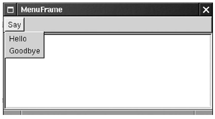

previous |
start |
next
Menus
- In this step, we will add a menu to the sample
application.
- We will create an application with a menu
bar that contains the names of top-level menus.
- There will be a single top-level menu named
"Say" that contains two menu items, "Hello" and
"Goodbye".
-

previous |
start |
next